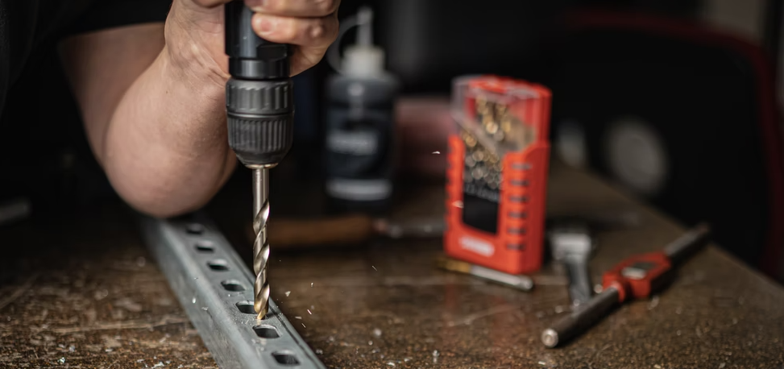

Actuar
Paso 8. Planificar acciones. El alumnado tendrá que elaborar una lista de las acciones secuenciadas que tienen que llevar a cabo para concluir el montaje:
- Hacer los planos con detalle para poder fabricar y entregar.
- Realizar el acopio de materiales y herramientas necesario.
- Fabricar las piezas necesarias para el ensamble.
- Realizar el ensamble.
- Preparar el informe técnico.
- Preparar la presentación final.
Después decidirán quién y cuándo realiza cada tarea, con el objetivo de que todos avancen en todo momento en cumplir el objetivo.
También deberán estimar el tiempo de cada tarea para ver si pueden cumplir con el plazo o tienen que modificar su planteamiento.
Es un paso que al alumnado le cuesta, pues quieren enseguida pasar a la acción (paso 9). Aquí se pueden sugerir el uso de agendas de equipo, diagramas de Grant, detección de pasos críticos...
Te recomendamos el curso de Aularagón Design Thinking en educación
Photo by Daria Nepriakhina on Unsplash
Paso 9.- Ejecutar acciones Paso 9: Realizan las acciones planteadas para montar el soporte y generar el resto de productos. El equipo analiza los problemas que van surgiendo en la fabricación, en el montaje, etc. corrigen las desviaciones acordando las medidas necesarias para conseguir acabar en plazo.

Photo by Daniel Smyth on Unsplash